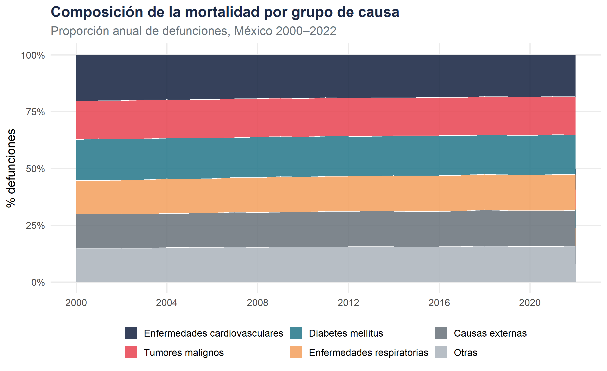
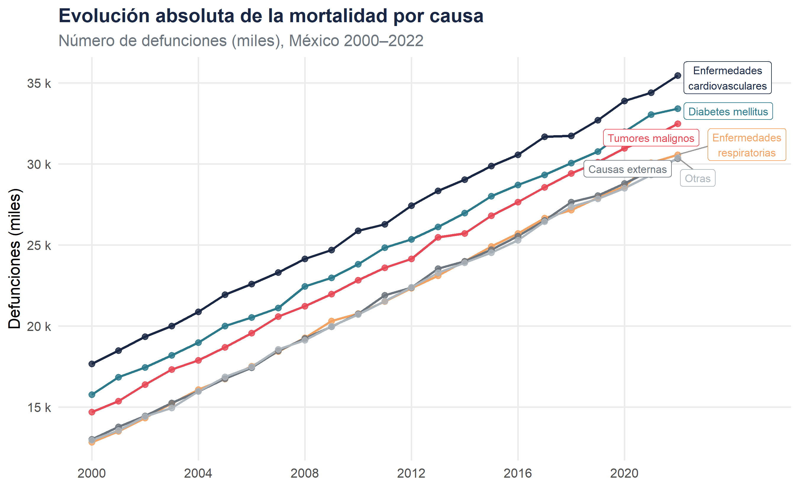
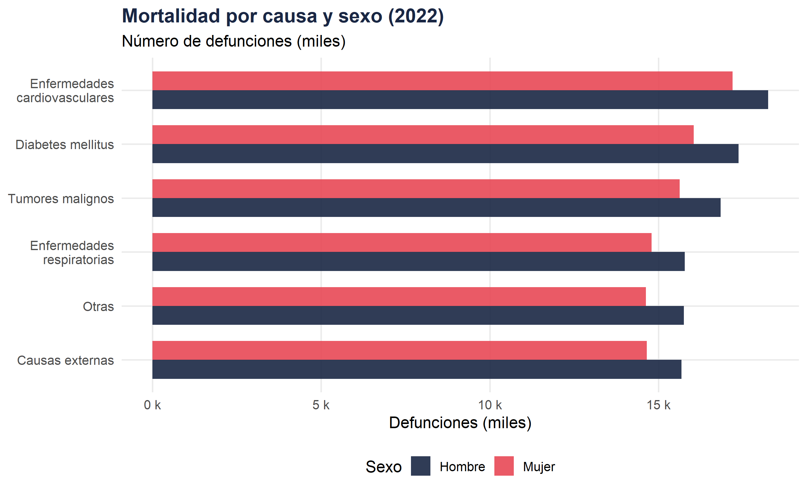
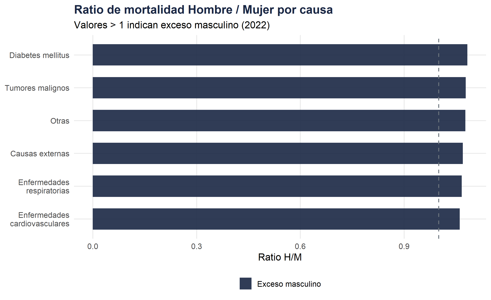
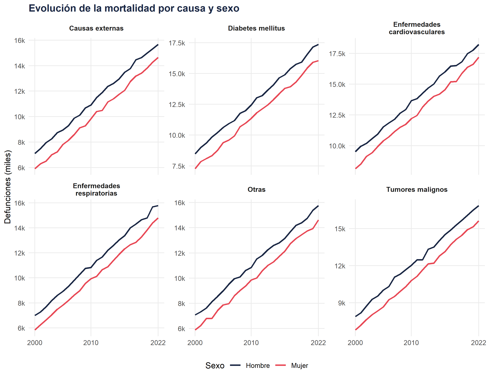
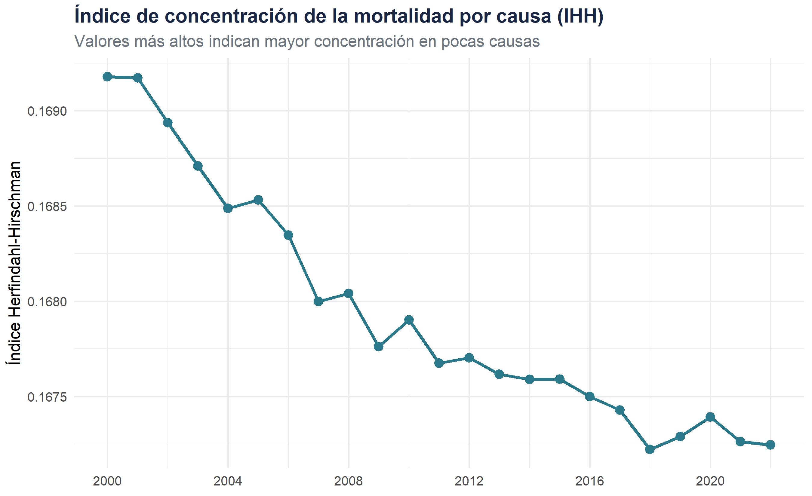

Bloque A · Nivel 2 — Transiciones epidemiológicas en México, 2000–2022
Fecha de publicación
abril 2026
Bloque A · Nivel 2Variables : year · sex · cause
Introducción analítica
La incorporación de la causa de muerte como dimensión analítica permite identificar las grandes transiciones epidemiológicas que caracterizan la evolución sanitaria de México durante las dos primeras décadas del siglo XXI.
En este nivel se busca responder tres preguntas clave :
¿Qué enfermedades concentran la mayor carga de mortalidad ?
¿Cómo ha evolucionado la composición por causa en el tiempo ?
¿Existen diferencias de género en los patrones causales ?
Tip
Enlace con el nivel anterior
El Nivel ① — Descriptivo general establece las tendencias brutas de mortalidad. Aquí añadimos la dimensión causal para explicar esas tendencias.
ggplot(mort_causa_pct,aes(x =year, y =pct, fill =cause))+geom_area(alpha =0.88, color ="white", linewidth =0.3)+scale_fill_manual(values =palette_causa)+scale_x_continuous(breaks =seq(2000, 2022, 4))+scale_y_continuous(labels =label_percent(scale =1))+labs( title ="Composición de la mortalidad por grupo de causa", subtitle ="Proporción anual de defunciones, México 2000–2022", x =NULL, y ="% defunciones", fill =NULL)+theme_minimal(base_size =13)+theme( legend.position ="bottom", legend.key.size =unit(0.5, "cm"), plot.title =element_text(face ="bold", color ="#1a2744"), plot.subtitle =element_text(color ="#6c757d"), panel.grid.minor =element_blank())+guides(fill =guide_legend(nrow =2))

Figura 1: Structure de la mortalité par cause, 2000–2022 (%)
Código
ggplot(mort_causa,aes(x =year, y =deaths/1000, color =cause, group =cause))+geom_line(linewidth =1)+geom_point(size =2, alpha =0.8)+geom_label_repel( data =mort_causa|>filter(year==last_year),aes(label =str_wrap(cause, 18)), size =3, nudge_x =0.8, segment.color ="grey60", show.legend =FALSE)+scale_color_manual(values =palette_causa)+scale_x_continuous(breaks =seq(2000, 2022, 4), limits =c(2000, 2025))+scale_y_continuous(labels =label_comma(suffix =" k"))+labs( title ="Evolución absoluta de la mortalidad por causa", subtitle ="Número de defunciones (miles), México 2000–2022", x =NULL, y ="Defunciones (miles)", color =NULL)+theme_minimal(base_size =13)+theme( legend.position ="none", plot.title =element_text(face ="bold", color ="#1a2744"), plot.subtitle =element_text(color ="#6c757d"), panel.grid.minor =element_blank())

Figura 2: Évolution absolue de la mortalité par cause
Código
mort_causa|>filter(year%in%c(2000, 2005, 2010, 2015, 2019, 2022))|>pivot_wider(names_from =year, values_from =deaths)|>arrange(desc(`2022`))|>mutate(across(where(is.numeric), ~format(.x, big.mark =",")))|>kable( caption ="Defunciones por causa de muerte, años seleccionados", col.names =c("Causa", "2000", "2005", "2010", "2015", "2019", "2022"))|>kable_styling(bootstrap_options =c("striped", "hover"), full_width =FALSE)|>row_spec(1, bold =TRUE, background ="#f0f4f8")
Defunciones por causa de muerte, años seleccionados
mort_causa_sex|>filter(year==last_year)|>mutate(cause =str_wrap(cause, 22))|>ggplot(aes(x =reorder(cause, deaths), y =deaths/1000, fill =sex))+geom_col(position ="dodge", width =0.7, alpha =0.9)+coord_flip()+scale_fill_manual(values =palette_sexo)+scale_y_continuous(labels =label_comma(suffix =" k"))+labs( title =paste0("Mortalidad por causa y sexo (", last_year, ")"), subtitle ="Número de defunciones (miles)", x =NULL, y ="Defunciones (miles)", fill ="Sexo")+theme_minimal(base_size =13)+theme( legend.position ="bottom", plot.title =element_text(face ="bold", color ="#1a2744"), panel.grid.minor =element_blank())

Figura 3: Mortalité par cause et sexe, dernière année disponible
Código
mort_causa_sex|>filter(year==last_year)|>pivot_wider(names_from =sex, values_from =deaths)|>mutate( ratio_hm =Hombre/Mujer, cause =str_wrap(cause, 22), direction =if_else(ratio_hm>1, "Exceso masculino", "Exceso femenino"))|>ggplot(aes(x =reorder(cause, ratio_hm), y =ratio_hm, fill =direction))+geom_col(width =0.65, alpha =0.9)+geom_hline(yintercept =1, linetype ="dashed", color ="#6c757d")+coord_flip()+scale_fill_manual( values =c("Exceso masculino"="#1a2744","Exceso femenino"="#e84855"))+labs( title ="Ratio de mortalidad Hombre / Mujer por causa", subtitle =paste0("Valores > 1 indican exceso masculino (", last_year, ")"), x =NULL, y ="Ratio H/M", fill =NULL)+theme_minimal(base_size =13)+theme( legend.position ="bottom", plot.title =element_text(face ="bold", color ="#1a2744"), panel.grid.minor =element_blank())

Figura 4
Código
ggplot(mort_causa_sex,aes(x =year, y =deaths/1000, color =sex, group =sex))+geom_line(linewidth =0.9)+facet_wrap(~str_wrap(cause, 20), scales ="free_y", ncol =3)+scale_color_manual(values =palette_sexo)+scale_x_continuous(breaks =c(2000, 2010, 2022))+scale_y_continuous(labels =label_comma(suffix ="k"))+labs( title ="Evolución de la mortalidad por causa y sexo", x =NULL, y ="Defunciones (miles)", color ="Sexo")+theme_minimal(base_size =11)+theme( legend.position ="bottom", plot.title =element_text(face ="bold", color ="#1a2744"), strip.text =element_text(size =9, face ="bold"), panel.grid.minor =element_blank())

Figura 5: Tendencias por causa y sexo, 2000–2022
Indicateurs de concentration
Código
# Indice de Herfindahl-Hirschman (concentration causale)ihh<-mort_causa_pct|>group_by(year)|>summarise(ihh =sum((pct/100)^2), n_causas =n_distinct(cause), causa_top =cause[which.max(pct)], pct_top =max(pct))|>ungroup()ggplot(ihh, aes(x =year, y =ihh))+geom_line(color ="#2a7a8c", linewidth =1.2)+geom_point(color ="#2a7a8c", size =3)+scale_x_continuous(breaks =seq(2000, 2022, 4))+labs( title ="Índice de concentración de la mortalidad por causa (IHH)", subtitle ="Valores más altos indican mayor concentración en pocas causas", x =NULL, y ="Índice Herfindahl-Hirschman")+theme_minimal(base_size =13)+theme( plot.title =element_text(face ="bold", color ="#1a2744"), plot.subtitle =element_text(color ="#6c757d"))

Points clés de ce niveau
Nota
Retenir de ce niveau ②
La mortalité mexicaine est dominée par les maladies cardiovasculaires et le diabète sucré, reflet de la transition épidémiologique avancée.
Les causes externes (accidents, violences) présentent un ratio H/M nettement supérieur à 1, révélant un déterminisme de genre fort.
La dynamique temporelle montre une diversification progressive des causes, visible dans la baisse de l’IHH après 2010.
---title: "② Desagregación por causa de muerte"subtitle: "Bloque A · Nivel 2 — Transiciones epidemiológicas en México, 2000–2022"date: todaydate-format: "MMMM YYYY"lang: es---<span class="badge-nivel">Bloque A · Nivel 2</span>**Variables** : `year` · `sex` · `cause`---## Introducción analíticaLa incorporación de la **causa de muerte** como dimensión analítica permite identificarlas grandes **transiciones epidemiológicas** que caracterizan la evolución sanitariade México durante las dos primeras décadas del siglo XXI.En este nivel se busca responder tres preguntas clave :1. ¿Qué enfermedades concentran la mayor carga de mortalidad ?2. ¿Cómo ha evolucionado la composición por causa en el tiempo ?3. ¿Existen diferencias de género en los patrones causales ?::: {.callout-tip}**Enlace con el nivel anterior** El [Nivel ① — Descriptivo general](A1_descriptivo_general.qmd) establece las tendenciasbrutas de mortalidad. Aquí añadimos la dimensión causal para explicar esas tendencias.:::---```{r setup-n2, include=FALSE}library(tidyverse)library(scales)library(knitr)library(kableExtra)library(ggrepel)library(patchwork) # composition de graphiques# ── Palette cohérente (définie dans index.qmd, reproduite ici) ───────palette_sexo <-c("Hombre"="#1a2744", "Mujer"="#e84855","Total"="#2a7a8c")palette_causa <-c("Enfermedades cardiovasculares"="#1a2744","Tumores malignos"="#e84855","Diabetes mellitus"="#2a7a8c","Enfermedades respiratorias"="#f4a261","Causas externas"="#6c757d","Otras"="#adb5bd")# ── Données (remplacer par readRDS("data/mort_simulated.rds")) ────────set.seed(42)years <-2000:2022mort <-expand.grid(year = years,sex =c("Hombre", "Mujer"),state =c("Ciudad de México", "Jalisco", "Nuevo León","Veracruz", "Chiapas", "Oaxaca","Guanajuato", "Michoacán", "Puebla", "Sonora"),cause =c("Enfermedades cardiovasculares", "Tumores malignos","Diabetes mellitus", "Enfermedades respiratorias","Causas externas", "Otras")) |>mutate(deaths =rpois(n(), lambda =500+40* (year -2000) +ifelse(sex =="Hombre", 120, 0) +case_when( cause =="Diabetes mellitus"~200, cause =="Enfermedades cardiovasculares"~300, cause =="Tumores malignos"~150,TRUE~50 ) +case_when( state =="Ciudad de México"~400, state =="Chiapas"~-100,TRUE~0 )),rate = deaths /runif(n(), 100000, 2000000) *100000 )# ── Agrégations utiles ────────────────────────────────────────────────# Par année × causemort_causa <- mort |>group_by(year, cause) |>summarise(deaths =sum(deaths), .groups ="drop")# Par année × cause × sexemort_causa_sex <- mort |>group_by(year, sex, cause) |>summarise(deaths =sum(deaths), .groups ="drop")# Part relative de chaque cause par anmort_causa_pct <- mort_causa |>group_by(year) |>mutate(pct = deaths /sum(deaths) *100) |>ungroup()# Dernière année disponiblelast_year <-max(years)```## Vue d'ensemble : composition de la mortalité### Évolution de la structure par cause::: {.panel-tabset}#### Aire empilée (%)```{r fig-aire-empilada, fig.cap="Structure de la mortalité par cause, 2000–2022 (%)"}ggplot(mort_causa_pct,aes(x = year, y = pct, fill = cause)) +geom_area(alpha =0.88, color ="white", linewidth =0.3) +scale_fill_manual(values = palette_causa) +scale_x_continuous(breaks =seq(2000, 2022, 4)) +scale_y_continuous(labels =label_percent(scale =1)) +labs(title ="Composición de la mortalidad por grupo de causa",subtitle ="Proporción anual de defunciones, México 2000–2022",x =NULL, y ="% defunciones", fill =NULL ) +theme_minimal(base_size =13) +theme(legend.position ="bottom",legend.key.size =unit(0.5, "cm"),plot.title =element_text(face ="bold", color ="#1a2744"),plot.subtitle =element_text(color ="#6c757d"),panel.grid.minor =element_blank() ) +guides(fill =guide_legend(nrow =2))```#### Lignes absolues```{r fig-lineas-absolutas, fig.cap="Évolution absolue de la mortalité par cause"}ggplot(mort_causa,aes(x = year, y = deaths /1000,color = cause, group = cause)) +geom_line(linewidth =1) +geom_point(size =2, alpha =0.8) +geom_label_repel(data = mort_causa |>filter(year == last_year),aes(label =str_wrap(cause, 18)),size =3, nudge_x =0.8, segment.color ="grey60",show.legend =FALSE ) +scale_color_manual(values = palette_causa) +scale_x_continuous(breaks =seq(2000, 2022, 4),limits =c(2000, 2025)) +scale_y_continuous(labels =label_comma(suffix =" k")) +labs(title ="Evolución absoluta de la mortalidad por causa",subtitle ="Número de defunciones (miles), México 2000–2022",x =NULL, y ="Defunciones (miles)", color =NULL ) +theme_minimal(base_size =13) +theme(legend.position ="none",plot.title =element_text(face ="bold", color ="#1a2744"),plot.subtitle =element_text(color ="#6c757d"),panel.grid.minor =element_blank() )```#### Tableau résumé```{r tabla-causa-anio}mort_causa |>filter(year %in%c(2000, 2005, 2010, 2015, 2019, 2022)) |>pivot_wider(names_from = year, values_from = deaths) |>arrange(desc(`2022`)) |>mutate(across(where(is.numeric), ~format(.x, big.mark =","))) |>kable(caption ="Defunciones por causa de muerte, años seleccionados",col.names =c("Causa", "2000", "2005", "2010", "2015", "2019", "2022") ) |>kable_styling(bootstrap_options =c("striped", "hover"),full_width =FALSE) |>row_spec(1, bold =TRUE, background ="#f0f4f8")```:::---## Différences de genre dans les patterns causaux::: {.panel-tabset}#### Hommes vs Femmes (2022)```{r fig-sex-causa-barras, fig.cap="Mortalité par cause et sexe, dernière année disponible"}mort_causa_sex |>filter(year == last_year) |>mutate(cause =str_wrap(cause, 22)) |>ggplot(aes(x =reorder(cause, deaths),y = deaths /1000, fill = sex)) +geom_col(position ="dodge", width =0.7, alpha =0.9) +coord_flip() +scale_fill_manual(values = palette_sexo) +scale_y_continuous(labels =label_comma(suffix =" k")) +labs(title =paste0("Mortalidad por causa y sexo (", last_year, ")"),subtitle ="Número de defunciones (miles)",x =NULL, y ="Defunciones (miles)", fill ="Sexo" ) +theme_minimal(base_size =13) +theme(legend.position ="bottom",plot.title =element_text(face ="bold", color ="#1a2744"),panel.grid.minor =element_blank() )```#### Ratio H/M par cause```{r fig-ratio-hm}mort_causa_sex |>filter(year == last_year) |>pivot_wider(names_from = sex, values_from = deaths) |>mutate(ratio_hm = Hombre / Mujer,cause =str_wrap(cause, 22),direction =if_else(ratio_hm >1, "Exceso masculino", "Exceso femenino") ) |>ggplot(aes(x =reorder(cause, ratio_hm), y = ratio_hm,fill = direction)) +geom_col(width =0.65, alpha =0.9) +geom_hline(yintercept =1, linetype ="dashed", color ="#6c757d") +coord_flip() +scale_fill_manual(values =c("Exceso masculino"="#1a2744","Exceso femenino"="#e84855") ) +labs(title ="Ratio de mortalidad Hombre / Mujer por causa",subtitle =paste0("Valores > 1 indican exceso masculino (", last_year, ")"),x =NULL, y ="Ratio H/M", fill =NULL ) +theme_minimal(base_size =13) +theme(legend.position ="bottom",plot.title =element_text(face ="bold", color ="#1a2744"),panel.grid.minor =element_blank() )```#### Tendencias por sexo```{r fig-tendencias-sexo, fig.height=7, fig.cap="Tendencias por causa y sexo, 2000–2022"}ggplot(mort_causa_sex,aes(x = year, y = deaths /1000,color = sex, group = sex)) +geom_line(linewidth =0.9) +facet_wrap(~str_wrap(cause, 20), scales ="free_y", ncol =3) +scale_color_manual(values = palette_sexo) +scale_x_continuous(breaks =c(2000, 2010, 2022)) +scale_y_continuous(labels =label_comma(suffix ="k")) +labs(title ="Evolución de la mortalidad por causa y sexo",x =NULL, y ="Defunciones (miles)", color ="Sexo" ) +theme_minimal(base_size =11) +theme(legend.position ="bottom",plot.title =element_text(face ="bold", color ="#1a2744"),strip.text =element_text(size =9, face ="bold"),panel.grid.minor =element_blank() )```:::---## Indicateurs de concentration```{r indice-concentracion}# Indice de Herfindahl-Hirschman (concentration causale)ihh <- mort_causa_pct |>group_by(year) |>summarise(ihh =sum((pct /100)^2),n_causas =n_distinct(cause),causa_top = cause[which.max(pct)],pct_top =max(pct)) |>ungroup()ggplot(ihh, aes(x = year, y = ihh)) +geom_line(color ="#2a7a8c", linewidth =1.2) +geom_point(color ="#2a7a8c", size =3) +scale_x_continuous(breaks =seq(2000, 2022, 4)) +labs(title ="Índice de concentración de la mortalidad por causa (IHH)",subtitle ="Valores más altos indican mayor concentración en pocas causas",x =NULL, y ="Índice Herfindahl-Hirschman" ) +theme_minimal(base_size =13) +theme(plot.title =element_text(face ="bold", color ="#1a2744"),plot.subtitle =element_text(color ="#6c757d") )```---## Points clés de ce niveau::: {.callout-note icon="false"}**Retenir de ce niveau ②**- La mortalité mexicaine est dominée par les maladies **cardiovasculaires** et le **diabète sucré**, reflet de la transition épidémiologique avancée.- Les **causes externes** (accidents, violences) présentent un ratio H/M nettement supérieur à 1, révélant un déterminisme de genre fort.- La dynamique temporelle montre une **diversification** progressive des causes, visible dans la baisse de l'IHH après 2010.:::---## Navigation::: {style="display:flex; justify-content:space-between; margin-top:2rem;"}[← ① Descriptivo general](A1_descriptivo_general.qmd){.btn .btn-outline-secondary}[→ ③ Causas específicas](A3_causas_especificas.qmd){.btn .btn-primary}:::